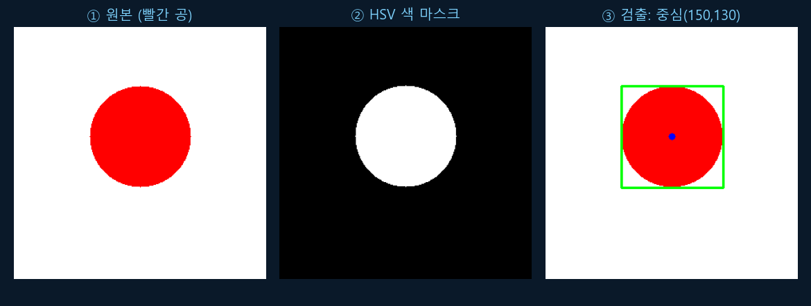
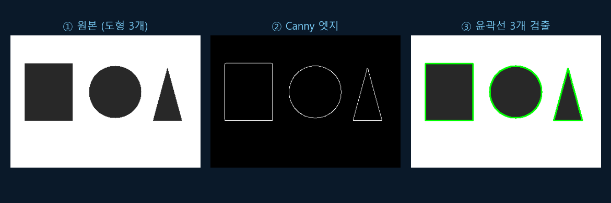
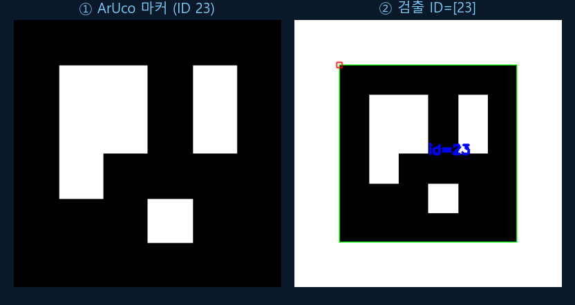

Chapter R8: 인식 (Perception · OpenCV)
카메라가 본 픽셀 덩어리에서 "빨간 공이 여기 있다", "마커 23번이 저기 있다" 같은 의미를 뽑아내는 것이 인식(perception)입니다. opencv-python으로 색 검출·엣지/윤곽선·ArUco 마커 검출을 다룹니다. (이 챕터의 모든 OpenCV 코드는 실제로 실행해 결과 이미지를 만들었습니다 — opencv 4.13.0.)
1. 인식이란? — 픽셀에서 의미로
디지털 이미지는 결국 숫자(픽셀)의 격자, 즉 numpy 배열입니다(R0!). 가로·세로 해상도와 색 채널을 가지죠. OpenCV는 색 채널을 BGR 순서(파랑·초록·빨강)로 저장합니다 — 흔히 쓰는 RGB와 반대라 가장 자주 하는 실수입니다.
💡 비유로 이해하기: 모자이크 타일 벽화
이미지는 수십만 개의 색 타일(픽셀)로 된 벽화입니다. 컴퓨터는 "고양이"를 통째로 보는 게 아니라 타일 색만 봅니다. 인식이란 이 타일 더미에서 "여기 빨간 동그라미가 있네", "이 윤곽은 삼각형이군" 하고 패턴과 의미를 찾아내는 일입니다.
import numpy as np, cv2
# 이미지는 픽셀의 numpy 배열 — (높이, 너비, 채널), OpenCV는 BGR 순서!
img = np.zeros((4, 6, 3), dtype=np.uint8) # 4×6 검은 이미지
img[:, :, 2] = 255 # R 채널(인덱스 2)만 255 → 빨강
print("shape:", img.shape) # (높이4, 너비6, 채널3)
print("픽셀[0,0] (B,G,R):", img[0, 0]) # [0 0 255] = 빨강
# HSV(색상·채도·명도)는 조명 변화에 강해 색 검출에 유리 (OpenCV에서 H는 0~179)
hsv = cv2.cvtColor(img, cv2.COLOR_BGR2HSV)
print("HSV[0,0] (H,S,V):", hsv[0, 0]) # [0 255 255] = 빨강(H=0)✅ 실행 결과 (검증됨)
shape: (4, 6, 3) 픽셀[0,0] (B,G,R): [ 0 0 255] HSV[0,0] (H,S,V): [ 0 255 255]
2. 색 검출 — HSV로 빨간 공 찾기
로봇이 "빨간 공을 따라가라"는 일을 하려면 먼저 공의 위치를 찾아야 합니다. HSV 색 공간으로 바꾼 뒤 cv2.inRange로 빨간색 범위만 마스크(흰=해당색, 검=나머지)로 뽑고, 윤곽선에서 중심·크기를 구합니다.

import numpy as np, cv2
img = np.full((300, 300, 3), 255, np.uint8) # 흰 배경
cv2.circle(img, (150, 130), 60, (0, 0, 255), -1) # 빨간 공 (BGR)
hsv = cv2.cvtColor(img, cv2.COLOR_BGR2HSV)
mask = cv2.inRange(hsv, (0, 100, 100), (10, 255, 255)) # 빨강 범위 마스크
cnts, _ = cv2.findContours(mask, cv2.RETR_EXTERNAL, cv2.CHAIN_APPROX_SIMPLE)
c = max(cnts, key=cv2.contourArea) # 가장 큰 윤곽선
M = cv2.moments(c)
cx, cy = int(M["m10"]/M["m00"]), int(M["m01"]/M["m00"]) # 무게중심
x, y, w, h = cv2.boundingRect(c) # 외접 사각형
print(f"공 중심=({cx},{cy}) 바운딩박스=({x},{y},{w},{h})")✅ 실행 결과 (검증됨)
공 중심=(150,130) 바운딩박스=(90,70,121,121)
중심이 정확히 우리가 그린 공의 중심(150,130)과 일치합니다. 이 픽셀 좌표를 카메라 모델(6절)로 실제 거리·방향으로 바꾸면 로봇이 공을 향해 움직일 수 있습니다.
3. 엣지와 윤곽선 — 모양 찾기
색이 아니라 모양으로 물체를 찾을 때는 엣지(경계선)를 봅니다. 노이즈를 줄이는 블러(GaussianBlur) 후 Canny 엣지 검출, 그리고 findContours로 닫힌 윤곽선을 뽑아 개수·면적·위치를 셉니다.

import cv2
gray = cv2.cvtColor(img, cv2.COLOR_BGR2GRAY) # 흑백으로
blur = cv2.GaussianBlur(gray, (5, 5), 0) # 노이즈 완화
edges = cv2.Canny(blur, 50, 150) # 엣지 검출 (이중 임계값)
# 이진화 후 윤곽선 추출 (RETR_EXTERNAL = 가장 바깥 윤곽만)
_, th = cv2.threshold(gray, 127, 255, cv2.THRESH_BINARY_INV)
cnts, _ = cv2.findContours(th, cv2.RETR_EXTERNAL, cv2.CHAIN_APPROX_SIMPLE)
print("검출된 도형(윤곽선) 개수:", len(cnts)) # 3✅ 실행 결과 (검증됨)
검출된 도형(윤곽선) 개수: 3
4. ArUco 마커 — 위치와 ID를 한 번에
ArUco 마커는 흑백 정사각 패턴에 ID가 인코딩된, 로보틱스의 "QR코드"입니다. 검출이 빠르고 정확해 물체 식별·위치·자세(pose) 추정에 널리 쓰입니다(예: 충전 스테이션 찾기, 물체 집기 R10). 카메라 보정(6절)과 함께 쓰면 마커의 3D 자세까지 구합니다.

import numpy as np, cv2
# 미리 정의된 마커 사전 (4x4 비트, 50개 ID)
adict = cv2.aruco.getPredefinedDictionary(cv2.aruco.DICT_4X4_50)
# 1) ID 23번 마커 생성
marker = cv2.aruco.generateImageMarker(adict, 23, 200)
scene = np.full((300, 300), 255, np.uint8)
scene[50:250, 50:250] = marker
# 2) 검출 (OpenCV 4.7+: ArucoDetector 객체)
detector = cv2.aruco.ArucoDetector(adict, cv2.aruco.DetectorParameters())
corners, ids, rejected = detector.detectMarkers(scene)
print("검출된 마커 ID:", ids.flatten().tolist()) # [23]✅ 실행 결과 (검증됨)
검출된 마커 ID: [23]
⚠️ OpenCV 4.7부터 ArUco API가 바뀌었습니다 — 옛 cv2.aruco.detectMarkers(img, dict, params) 함수형 대신 ArucoDetector 객체를 만들어 detector.detectMarkers(img)로 호출합니다.
5. (개요) 카메라 보정과 깊이
지금까지는 픽셀 위치만 구했습니다. "그래서 실제로 몇 미터 앞이지?"에 답하려면 두 가지가 더 필요합니다.
- 카메라 보정(calibration): 렌즈는 직선을 휘게 만듭니다(왜곡). 체스보드를 여러 각도로 찍어(
cv2.findChessboardCorners→cv2.calibrateCamera) 내부 파라미터 행렬 K(초점거리 fx·fy, 중심 cx·cy)와 왜곡 계수를 구하면, 픽셀 ↔ 실제 광선 방향을 정확히 연결할 수 있습니다. - 깊이(depth): 일반 카메라는 거리를 모릅니다. RGB-D 카메라(예: RealSense)나 스테레오(두 카메라의 시차), LiDAR(R2)로 깊이를 얻어 포인트클라우드(3D 점 집합)를 만듭니다.
마커의 코너 픽셀 + 카메라 행렬 K를 합치면(solvePnP) 마커의 3D 자세(SE(3), R1!)가 나옵니다 — 인식이 좌표·변환으로 이어지는 지점입니다.
6. 한 장 요약
| 주제 | 한 줄 정리 | 핵심 API |
|---|---|---|
| 이미지 | 픽셀 numpy 배열, OpenCV는 BGR | img.shape, cvtColor |
| 색 검출 | HSV로 바꿔 색 범위 마스크 | cv2.inRange (H 0~179) |
| 윤곽선 | 중심·면적·바운딩박스 | findContours, moments, boundingRect |
| 엣지 | 모양 경계 검출 | cv2.Canny |
| ArUco | ID·위치·자세 추정 | ArucoDetector.detectMarkers |
| 보정·깊이 | 픽셀 → 실제 거리·3D 자세 | calibrateCamera, solvePnP |
이제 로봇이 "본다". 다음 R9(SLAM·내비게이션)에서는 이 인식과 R2 센서·R4 오도메트리를 합쳐 "지도를 그리며 길을 찾는" 법을 배웁니다(곧 공개). 💪